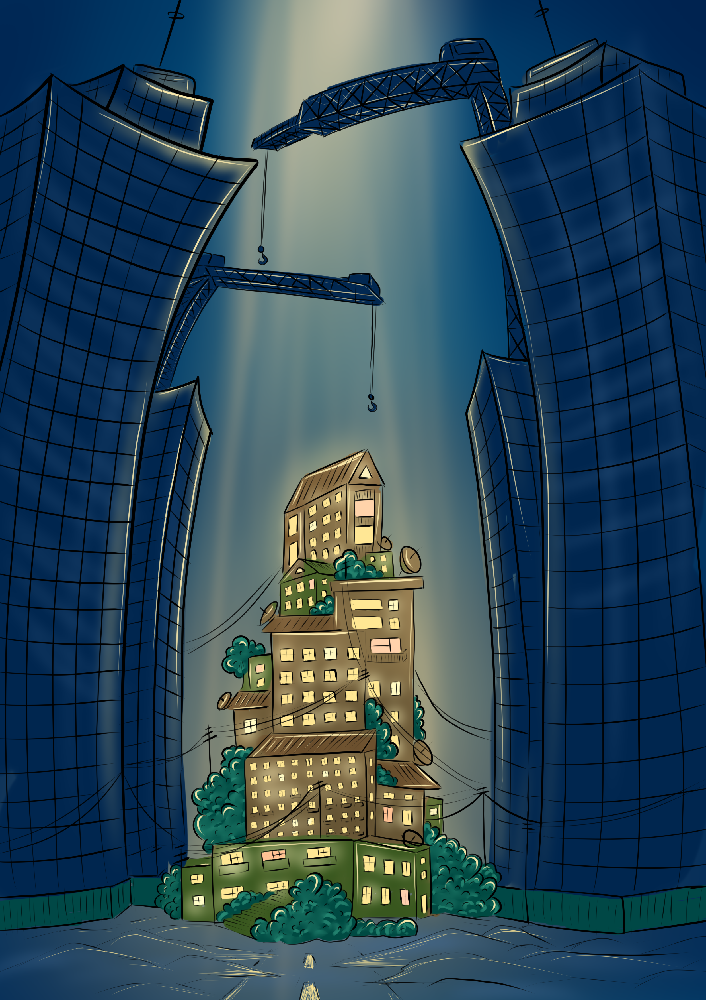

Работы наших участников
Люди ждут подходящего момента
Человек перед другими, надевая маску справедливости, отказывается совершить коррупцию,
но если он находится один в помещении и никто не видит его, он с удовольствием совершает
это грязное дело.

Домашнее наслие
Если смотреть на статус Кво, то одной из серьезных проблем общества является домашнее
насилие и оно в Центральной Азии особо распространена.
Женщина, которая подвергалась домашнему насилию, перед обществом всегда наносит
гримас,как буд то у нее все хорошо. Но, несмотря на это она надеется и верит в яркое и
светлое будущее (свет в глазах и солнце). Дети тоже становятся свидетелями и жертвами
происходящего в семье, поэтому во сне видет разных героев из мультфильмов. Для ребенка
же это целое детство. Цепь и птички описывают зависимость и свободу, в данном случаи
речь идёт о жертве насилия.
Браконьерство в центральной Азии и массовое истребление редких животных является
большой проблемой по сей день. Легальная международная торговля животными в год
составляет более 317 000 живых птиц, более 2 млн. рептилий, 2,5 млн. крокодильих шкур,
1,5 млн. шкур ящериц, 2,1 млн. шкур змей, 73 тонны икры, около 20 000 охотничьих
трофеев. Нелегальная торговля - по данным Интерпола, 6-9 миллиардов
долларов в год. Это угрожает 30 тысячам видов животных по всему миру. Всего осталось
около 6000 особей снежныйх барсов на всей планете. Человечество наступает, уничтожает
этих животных. Их используют для украшений и трофея. Но никто не понимает, насколько это
грозит человечеству. А жестокости человека нет предела, поэтому хочется призвать всех -
остановить эту бесконечную цепь насилия и истребления над живыми существами 🥺❤️

-
Автор: Тимур Шарипов
«Островок жизни»
Народ в виде маленького городка окружён тёмными мрачными высотками. Городок светится,
там люди
живут, дома старенькие, много зелени, дети играют, кто-то вешает бельё. Этим хочется
показать
то, что люди – это часть государства, а не высотки. Что вот этот маленький островок и
есть тот
самый центральный объект, ради чего государство должно существовать. Этот островок и
есть
решения – которые ДОЛЖНЫ приниматься, а не идти из тёмных мрачных высоток.
Цвета вокруг мрачные, пасмурные, тёмно-синие. А городок светлый, тёплый и светящийся. На
вкус
этот островок как тёплые венские вафли с клубничной начинкой, политый сгущённым молоком.
А мрак
вокруг городка, как горькие орехи (не люблю орехи). Которые покрылись изнутри гнилью,
где сидит
огромная гусеница пожирая всё. Хотя снаружи кажутся крепкими и прочными… Пахнет городок
очень
приятно, как свежее лавандовое мыло. Таким мылом и кондиционером люди стирают бельё,
которое
висит на балконах и улицах людей. Всё душистое свежее чистое и такое искреннее. Очень
кажется
родным и домашним. Этот островок звучит как спокойная indie или country музыка. Потому
что
никуда не спешит и не торопится. А мрачные высотки словно наблюдают за ним, и ощущение
будто они
медленно перемещаются. Звучит как ледокол, от которого исходит глухой звук «Гууум» и
шарахается
ударяясь металлическим корпусом. Так и эти здания скользят по земле. Направление:
антиутопия,
художественный цифровой стиль маслянной краски. Нарисована иллюстрация на перьевом
дисплее в
цифровом формате. Структура: передний план ярких насыщенных цветов и задний план в
мрачных
приглушённых тонах.

Мусор захватывает планету
Если коротко, то наша картина раскрывает тему экологии. Эта проблема касается всего мира
и мы - не исключение.
Я читала, что каждый ДЕНЬ в свалку привозят несколько тонн мусора.
Лишь малую часть перерабатывают, остальное сжигают или закапывают.
И ещё, когда мы куда-то идём с семьёй отдыхать, у озер всегда очень много мусора,
пластика, пакетов. Этим мы показали проблему безответственности людей к экологии.
На картине изображён кит который задыхается от мусора. Мы хотели показать что
безответственность людей имеет негативное влияние на все окружение.

"Бухарский Олень" - картина нитью
Графичное изображение краснокнижного животного нитью на черном фоне олицетворяет
страшную проблему современности - вымирание без возможности возобновить популяцию.
Черный глянцевый фон олицетворяет смерть.
Красными нитями изображён едва понятный образ животного - Бухарского оленя. Красные нити
олицетворяют красную книгу, кровь, сигнал бедствия и важность данной проблемы.
Картину можно также отнести к теме проблемы экологии.

Неприкасаемость законом.
Превышение полномочий , под маской закона творить беззаконие, неприкосаемость законом.
Постер представляет из себя старую газетную бумагу, где статья показывает «двойные
стандарты». С левой стороны нарисована рука представляющая «руку народа», а с другой
человек из высшего чина, который надел маску закона и творит беззаконие и его маска
давно уже вся в порче и заразе в виде разломов. Разломы, потому что маска уже не
выдерживает его испачканное лицо и грязь его лица уже даже маска не скрывает и
вырывается наружу грязь. Рука народа тянется к лицу чина с желанием сорвать эту маску.
По сторонам есть статьи, одна статья про руку – Сегодня утром предводитель
правозащитного движения «Рука Народа» был задержан и обвинен в измене государству …
Другая про чина с маской – В ночь с 15 го до 16 числа в Рутритрском округе машиной были
сбиты подростки в возрасте 17-18 лет, данные о злодеятеле скрываются властями но по
некоторым данным нам известно что это ….
Лицо в маске в стихах унижает и манит «руку народа» к себе, а «рука народа» в своем
стихе говорит, что доберется до него и сорвет эту маску .
Заключённые руки
Люди сами не понимая того ограничивают себя, не вдаваясь в подробности соглашаются с
мнениями других людей (доверяют власть непонятным людям).
Заключённые руки по своей воле отдают ключи от наручников, а рука другого человека хочет
забрать этот ключ, и отличительная черта руки, которая забирает ключ состоит в том, что
на ней видно, что человек одет в костюм, это символизирует, что он работник
государственной структуры.

Семейное фото
На руках родителей надеты наручники, а руки детей свободны. Это отсылка к тому, что чем
человек старше и чем у него больше осознания себя и окружающих вещей, чем больше у
человека ценностей, тем легче его подчинить. А дети делают то что им хочется, а не то
что им говорят.

Проект ГОЛОС
Данная работа посвящена ряду проблем:
- Домашнее насилие ( психологическое, физическое и экономическое )
- Не равенство и дискриминация
- Участие женщин в общественной жизни общества
- Голос женщин
В Таджикистане, как и в других традиционных обществах, домашнее насилие основаны на
гендерном неравенстве и стереотипах о роли женщины.
По разным оценкам международных организаций и государственных органов в Таджикистане
насилию подвергается от 50% до 80% женщин и детей.
Заметим, что в традиционных и в современных обществах насилие проявляется по-разному.
Источники насилия в традиционных обществах больше основаны на гендерном неравенстве и
глубоко укоренившихся стереотипов о роли женщины и девочки.

"Это не оружие"
Оружие не имеет никакого вреда, пока не попадает в руки человека. Опасным его делают
мысли и намерения.
Мысли определяют поступки: когда ты перед выбором, он может показаться легким, но всегда
есть последствия, с которыми приходится жить.
Каждый человек является творцом своей истории. Просто дайте себе время на раздумия,
когда будете делать следующий шаг...

Быть девушкой тяжело
В нашем обществе есть чётко выраженные гендерные роли. И за эти рамки нельзя выходить,
ибо ты подвергнешься общественному порицанию. Патриархальное общество приводит к
дискриминации. В основе всего этого лежит убеждение, что женщины и мужчины не могут быть
равными. Поэтому сексизм находит своё проявление в харассменте. Сексизм – это убеждение,
харассмент – действие. Оно шире. Это действия, жесты, поступки по отношению к другому
человеку.
Женщин в семье подвергают жестокому обращению, однако отношение к этому властей, похоже,
отражает отношение общества, когда считается, что женщина сама виновата в домашнем
насилии. Власти видят свою миссию в том, чтобы выступать в роли посредника и сохранять
семью, вместо того, чтобы защитить женщину и её права.
Ее образование – наше будущее.
В странах Центральной Азии образование для девочек часто уходит на второй план. Родители
считают, что главное в девушке это тихое воспитание, поддатливость, умение готовить и
заниматься бытовыми делами. Живя в цетре города мы можем не замечать, как там, где-то в
деревне, девочку одевают в темное полотно и не позволяют учиться в школе после 4 класса.
На картине изображена девочка окруженная серым замкнутым кругом, который олицетворяет
жизнь людей не имеющих доступа к образованию. Ангел-олицетворение ума, силы, и доброты.
Серый круг начинает потихоньку таять, и девочке открывается целый космос. Космос знаний,
новых возможностей, светлого будущего.
Автор: Джоми Тоирзода
Гости: Яниса Саар и Мирзокарим Умаров
Гости: Яниса Саар и Мирзокарим Умаров